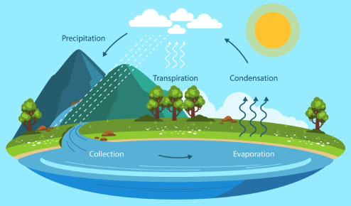

The hydrosphere comprises water on the planet's surface, beneath, and in the atmosphere.
On Earth, it is the sum of all water, in the ocean, the ground, on the surface, and in the air.
The hydrosphere may be liquid, vapor, or ice.
COMPONENTS OF THE
HYDROSPHERE
ATMOSPHERIC WATER VAPOR
Water is continually moving through the atmosphere. Warm updrafts carry water into the atmosphere when it evaporates from the Earth's surface. It condenses into clouds, is driven by the wind, and eventually falls back to Earth as rain or snow. This cycle is a crucial mechanism for transferring heat and energy from the Earth's surface to the atmosphere and transporting it from one location to another on our planet.
LIQUID AND FROZEN SURFACE WATER
Liquid surface water refers to any body of water above earth, such as streams, rivers, lakes, wetlands, reservoirs, and creeks. The ocean, although being salty, is also classified as surface water.
On the other hand, the frozen surface water on Earth, also known as the "cryosphere" contains the frozen parts of the planet. It includes snow and ice on land, ice caps, glaciers, permafrost, and sea ice.
GROUNDWATER
Groundwater is defined as water that has traveled down from the soil surface and gathered in the crevices between sediments and splits in rock. Groundwater fills all vacant areas underneath, known as the saturated zone, until it reaches a solid barrier of rock. Aquifers are bodies of rock and sediment that retain groundwater and allow it to flow. Groundwater's residence duration in aquifers varies greatly, ranging from a few days or weeks to ten thousand years or more.
THE HYDROLOGIC/WATER CYCLE
|

|
The water cycle illustrates how water moves (cycles) over Earth's land, ocean, and atmosphere. Water occurs in all three phases and takes numerous forms, including lakes and rivers, glaciers and ice sheets, oceans and seas, subterranean aquifers, and vapor in the air and clouds.
|
EVAPORATIONEvaporation is the transformation of a liquid's surface into a gas. Liquid water (in the ocean, lakes, or rivers) evaporates to form water vapor. The sun drives the process of evaporation in the water cycle. The rays of the sun interacts with liquid water on the ocean's surface, transforming it into an invisible gas (water vapor). Evaporation is also affected by wind, temperature, and the density of the body of water. |
CONDENSATIONCondensation is the process by which a gas becomes a liquid. In the water cycle, water vapor in the atmosphere condenses and turns into liquid. Condensation, like evaporation, is controlled by sunlight. Water vapor cools until it hits its saturation limit, also known as the dew point. Air pressure has a significant impact on an area's dew point. |
TRANSPIRATIONTranspiration is the mechanism by which water vapor is released from plants and soil. Stomata are small holes that allow plants to discharge water vapor. Light has a considerable impact on stomatal opening, hence it is frequently related with the sun and the evaporative process. |
PRECIPITATIONPrecipitation is defined as any liquid or solid water that falls to Earth due to atmospheric condensation. Rain, snow, and hail are all forms of precipitation. Precipitation is one of the various ways water moves from the atmosphere to the ground or ocean. |
COLLECTIONThe precipitation is subsequently "collected" in bodies of water such as rivers, lakes, and seas, where it evaporates back into the atmosphere, restarting the cycle. If water falls on plants, it may evaporate off the leaves and return to the atmosphere or drip down to the ground. Some of this water may then be absorbed by plant roots in the ground. In frigid climates, precipitation can accumulate on land as snow, ice, or glaciers. If temperatures rise, the ice melts into liquid water, which soaks into the earth or flows into rivers or the ocean. Water that comes into contact with land may flow over it and end up in seas, rivers, or lakes. This water is referred to as "surface run-off". Some of the precipitation will soak (or "infiltrate") into the soil, where it will slowly flow through the earth until it ultimately reaches a river or the ocean. |
|
REFERENCES |
|
1.) Hydrosphere. (n.d.). https://education.nationalgeographic.org/resource/hydrosphere/ 2.) NASA Earth Observatory. (n.d.). Water vapor. https://earthobservatory.nasa.gov/global-maps/MYDAL2_M_SKY_WV 3.) Rafferty, J. P. (n.d.). Why Does Water Freeze from the Top Down? Encyclopedia Britannica. https://www.britannica.com/story/why-does-water-freeze-from-the-top-down 4.) Surface water. (n.d.). https://education.nationalgeographic.org/resource/surface-water/ 5.) Groundwater. (n.d.). https://education.nationalgeographic.org/resource/groundwater/ 6.) Hydrologic Cycle. (n.d.). https://education.nationalgeographic.org/resource/hydrologic-cycle/ 7.) The Water Cycle! (n.d.). The Water Cycle! - National Geographic Kids (natgeokids.com) 8.) Cryosphere. (n.d.). https://education.nationalgeographic.org/resource/cryosphere/ |